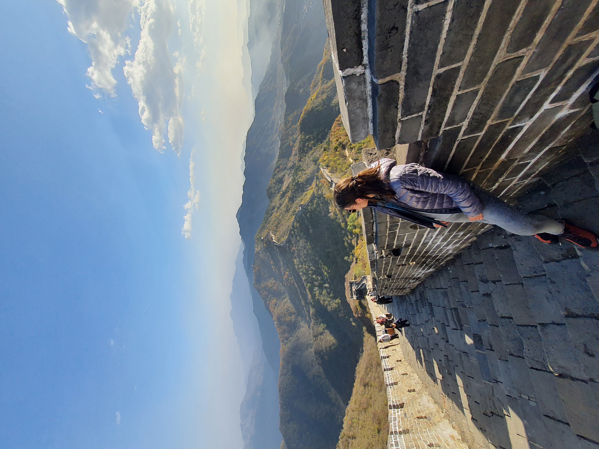
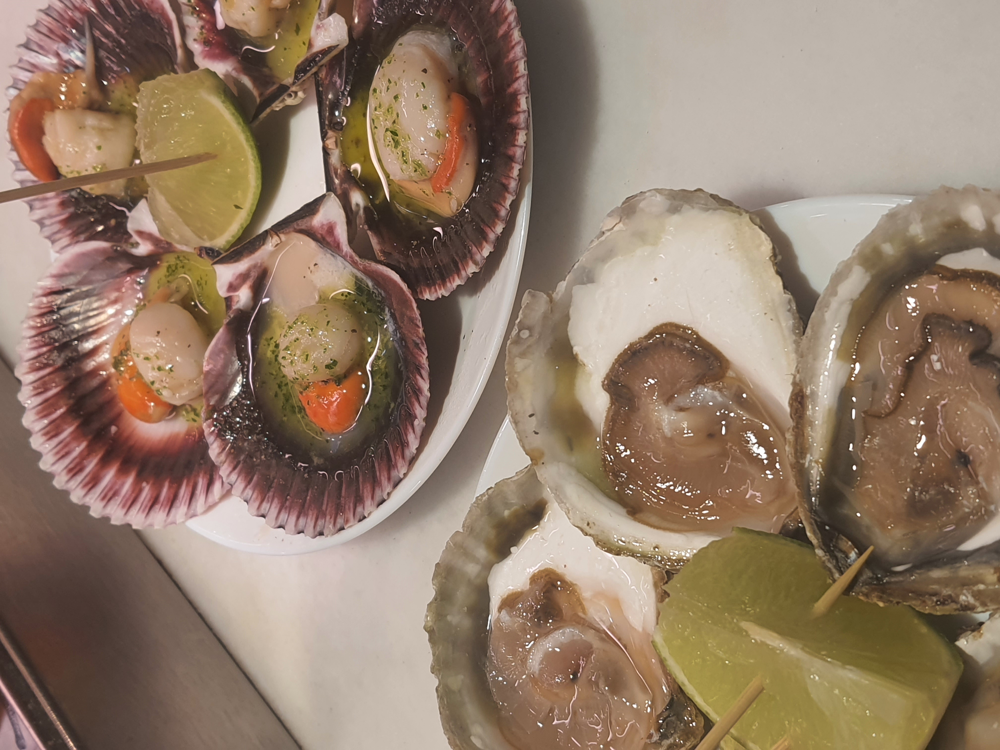
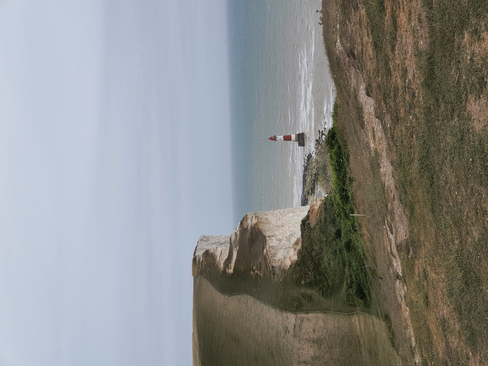
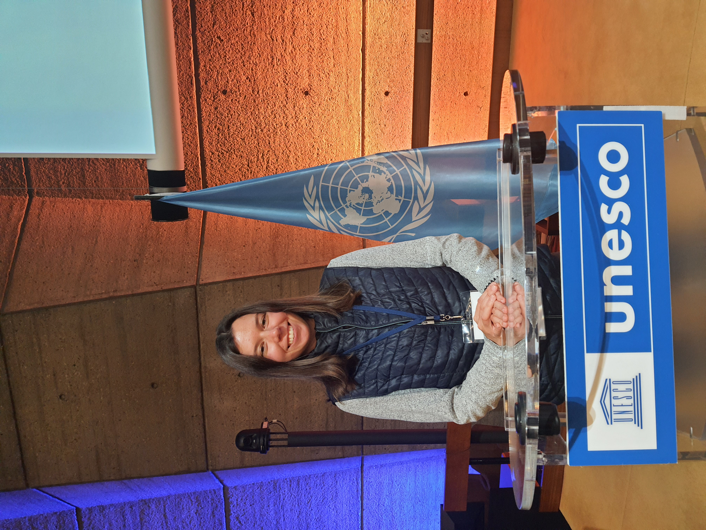
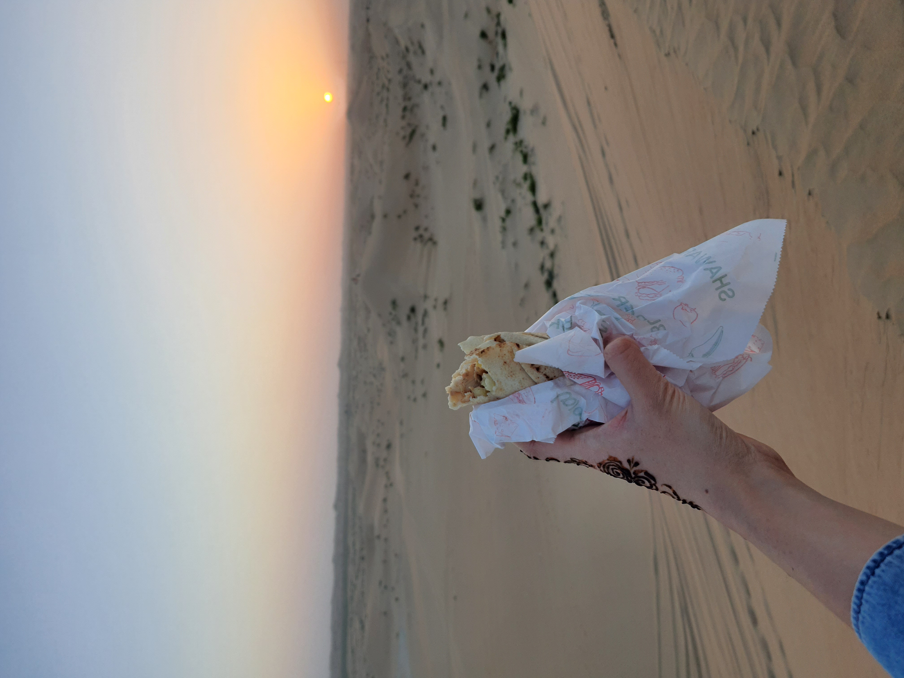
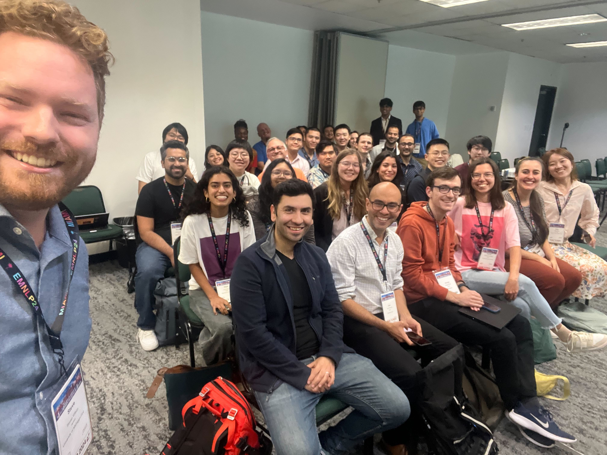
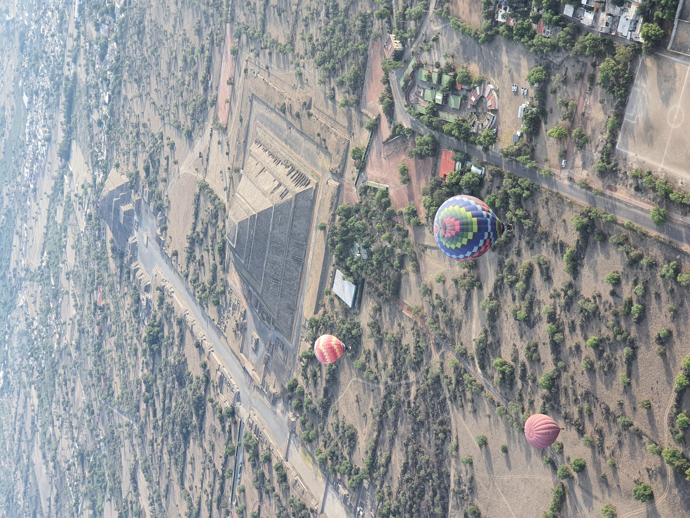
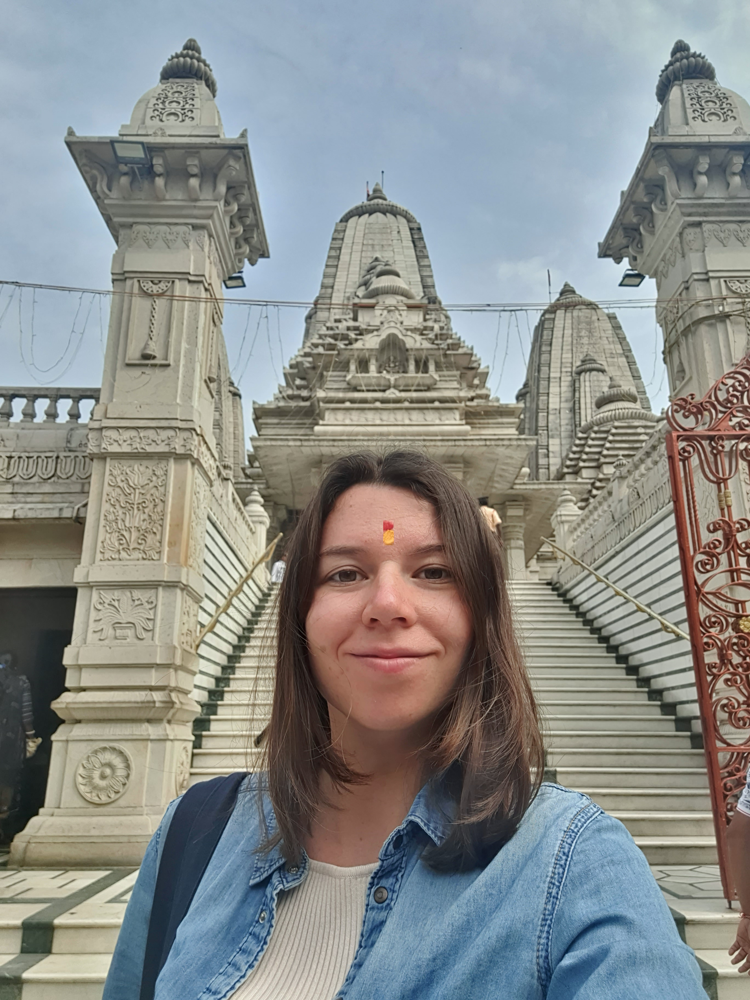
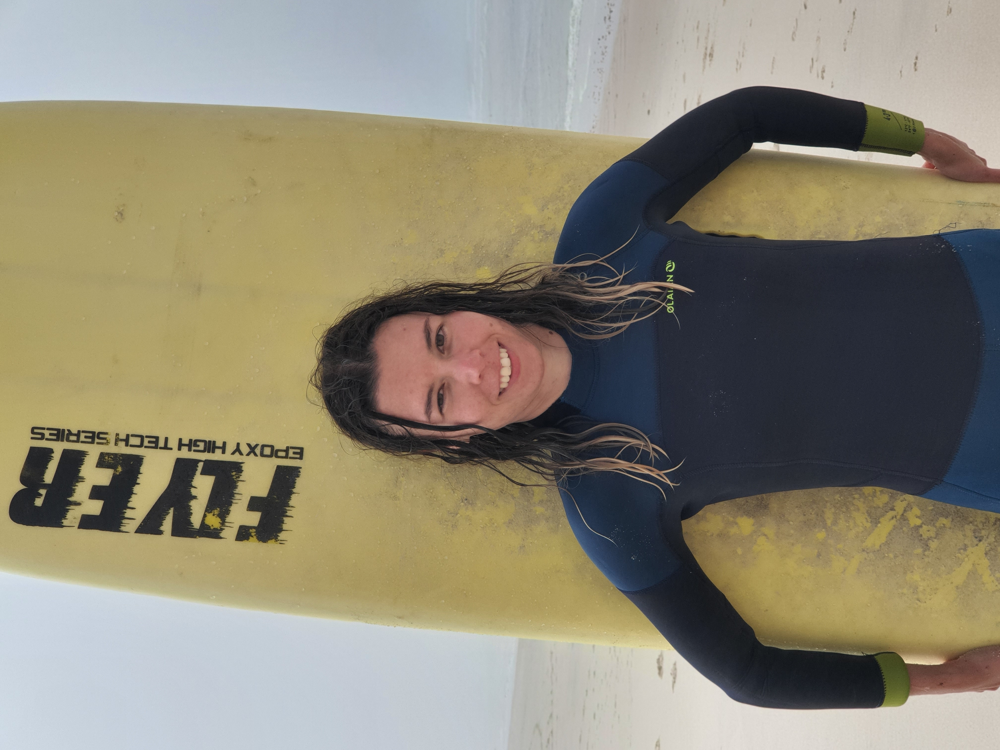

Interests
Beyond the research lab
I am quite outgoing and sports person. Since my school years, I am into water sports - swimming, surfing, and windsuring. Since Bachelor, I was doing athletics, which grew into functional trainings combined with yoga and pilates. Due to living in Germany, love hikes.
I cannot imagine my life without reading, especially, philosophical books. As a person working with AI and trying to find a balance between static human life
and disruptive innovations, I am fascinated by sci-fi and discussions about human nature.
Together with that, feminism is a huge part of my life.
One of my regular ways to spend a weekend day: brunch with friends in a new place.
I also heavily like exploring new countries, cultures, and cuisines.
Countries visited (status on March, 2026): 31.








